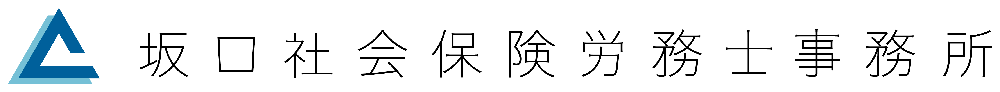
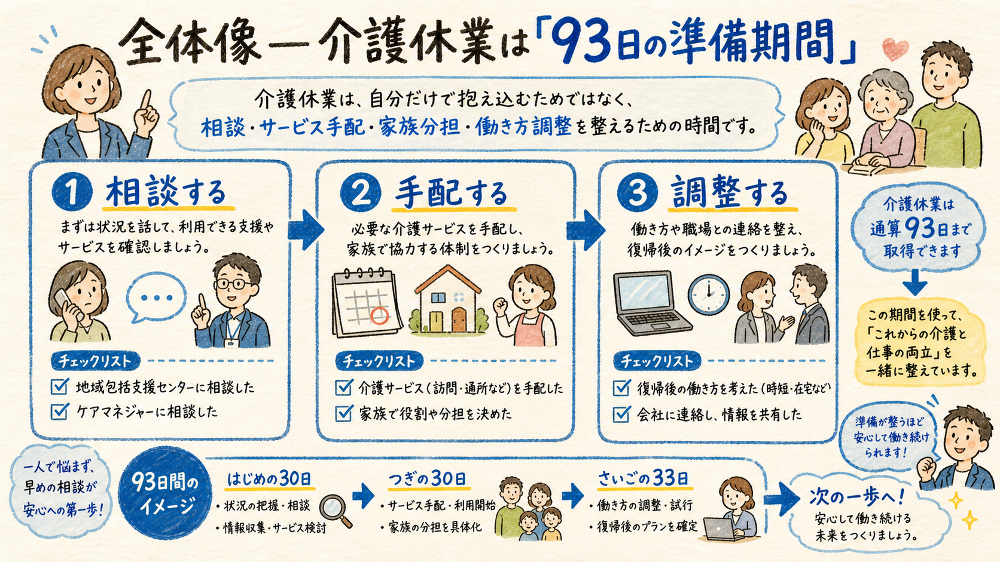
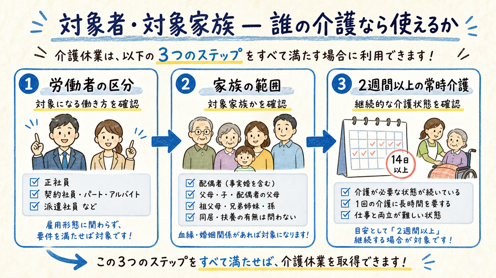
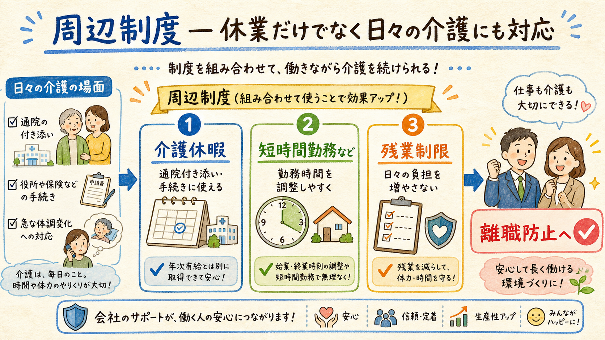
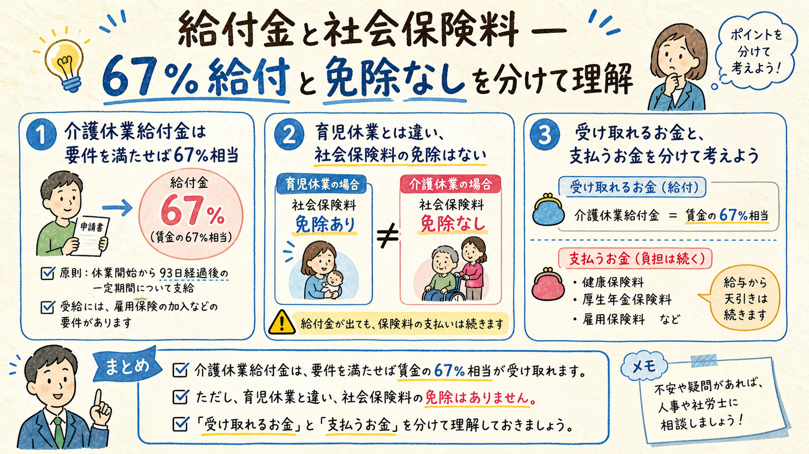
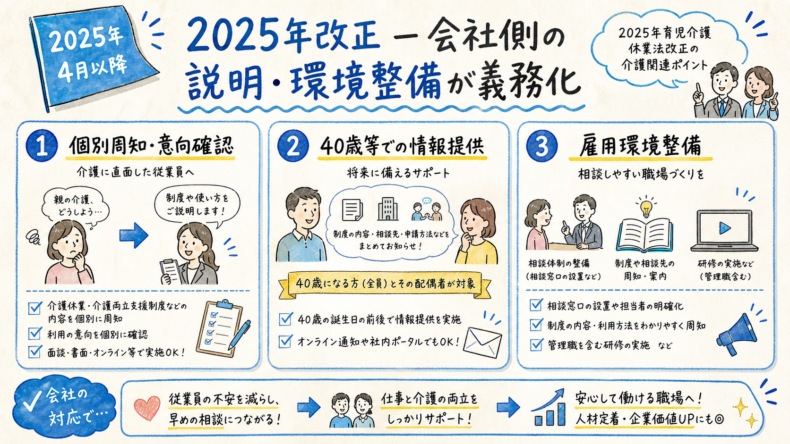

介護休業・介護休暇・短時間勤務等・給付金・2025年改正を、顧問先で共有しやすい1枚HTMLに整理しました。法律知識がない方でも「誰が、いつ、何を使えるか」が追えるよう、まず全体像、その後に実務ポイントの順で確認できます。
仕事を辞めずに介護体制を整えるため、まとまった期間休む制度です。

介護休業は、要介護状態にある対象家族を介護するための休業制度です。実務上は「本人が長期間ずっと介護する制度」と誤解されがちですが、厚生労働省も、仕事と介護を両立できる体制を整える準備期間として活用することを示しています。
まず押さえる数字は、対象家族1人につき「通算93日まで」「最大3回まで」。この範囲内で、介護サービスの手配や家族間の分担を組み立てます。
| 確認項目 | 制度上の整理 | 説明のコツ |
|---|---|---|
| 目的 | 要介護状態の家族を介護するための休業 | 介護体制を整える時間と伝える |
| 上限 | 対象家族1人につき通算93日、最大3回 | 「93日×家族ごと」で把握する |
| 申出 | 原則、休業開始予定日の2週間前までに書面等で申出 | 社内様式・申出先をあらかじめ決める |
対象労働者、対象家族、要介護状態を3つのチェックで確認します。

| チェック | 内容 | 注意点 |
|---|---|---|
| 労働者 | 日々雇用を除く男女の労働者。有期雇用でも一定要件を満たせば対象 | 労使協定により継続雇用1年未満等を除外できる場合あり |
| 対象家族 | 配偶者、父母、子、祖父母、兄弟姉妹、孫、配偶者の父母 | 事実婚の配偶者も含まれる |
| 要介護状態 | 2週間以上にわたり常時介護を必要とする状態 | 介護保険の要介護認定と必ず一致するわけではない |
「要介護認定がない＝制度対象外」とは限りません。育児・介護休業法上の要介護状態に該当するかを、別途確認する必要があります。
短い用事、勤務時間の調整、残業・深夜業の負担軽減を組み合わせます。

| 制度 | 使う場面 | ポイント |
|---|---|---|
| 介護休暇 | 通院付き添い、手続き、短時間の世話 | 対象家族1人なら年5日、2人以上なら年10日。時間単位取得も可能 |
| 短時間勤務等 | 一定期間、働き方を調整したい | 会社は短時間勤務・フレックス・時差出勤・費用助成等から1つ以上を制度化 |
| 所定外・時間外・深夜業の制限 | 残業や深夜勤務が介護に支障となる | 請求により残業免除や時間外上限、深夜業制限を受けられる |
「まとまって休む＝介護休業」「日々の用事＝介護休暇」「働き方を変える＝短時間勤務等」と分けて説明すると、制度の使い分けが伝わりやすくなります。
介護休業中のお金は、雇用保険給付と社会保険料の扱いを分けて確認します。

| 項目 | 整理 | 実務上の注意 |
|---|---|---|
| 介護休業給付金 | 休業開始時賃金日額×支給日数×67％ | 雇用保険の被保険者期間などの要件あり |
| 支給上限 | 同じ対象家族につき通算93日まで、3回まで | 制度上の介護休業上限と合わせて管理 |
| 社会保険料 | 介護休業中も健康保険料・厚生年金保険料は免除されない | 無給の場合、本人負担分の徴収方法を事前に確認 |
育児休業と同じ感覚で「社会保険料が免除される」と説明すると誤りです。介護休業では免除制度がないため、給与が出ない期間の本人負担分をどう徴収するか確認が必要です。
介護に直面する前から、制度を知らせ、相談しやすい体制を作る方向へ変わっています。

| 改正ポイント | 会社が行うこと | 施行 |
|---|---|---|
| 個別周知・意向確認 | 家族の介護に直面した旨の申出をした労働者へ、制度・申出先・給付金を個別に周知し、意向確認する | 2025年4月 |
| 早期情報提供 | 40歳に達する年度または40歳到達日の翌日から1年間に、制度・申出先・給付金情報を提供する | 2025年4月 |
| 雇用環境整備 | 研修、相談窓口、取得事例提供、利用促進方針の周知等から措置を講じる | 2025年4月 |
| テレワーク等 | 介護のためにテレワーク等を選択できるよう措置を講ずることが努力義務 | 2025年4月 |
顧問先には「規程だけでなく、周知文・面談フロー・相談窓口・40歳到達者への案内まで整える」と説明すると、改正対応の抜け漏れを防ぎやすくなります。